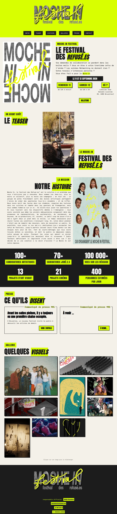
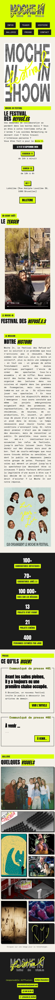
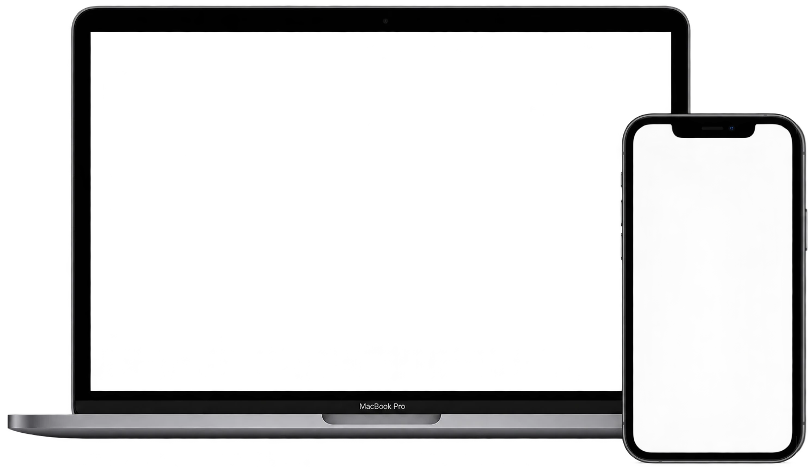
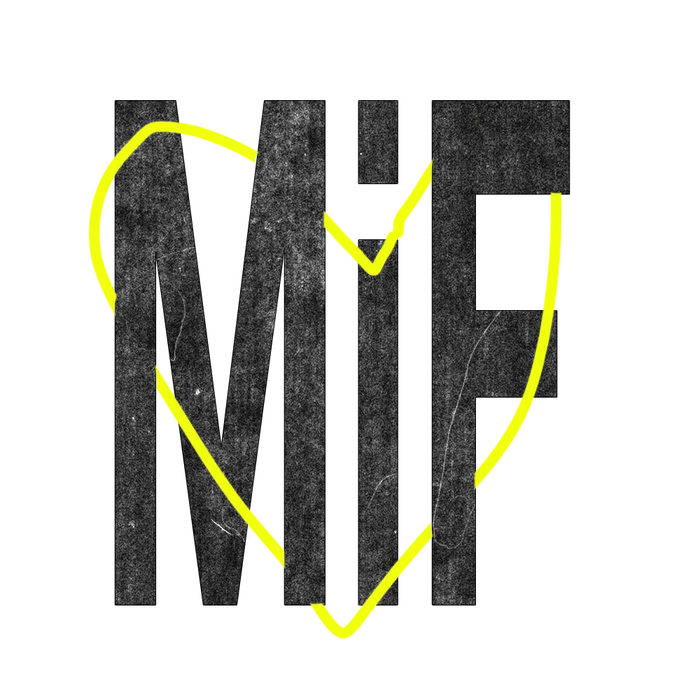
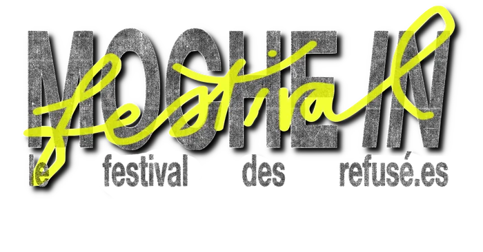

Front-end Development



Moche-In is a theatre and cinema festival in Brussels themed around rejection and "ugliness". The performing arts and film industries turn down far more projects than they accept, so the team created a festival where work rejected by other festivals or funding programs can be shown, find an audience and build new contacts. I was called to design and build its electronic press kit (EPK), a one-page website for journalists and partners.
This was a real client project with a tight deadline of only a few days. The colors, fonts and logo were already chosen, so my focus was to convey the team’s bold energy and intentions to the press. The EPK also had to make journalists’ work easy, with clear navigation and photos and articles within reach, while keeping the team’s loud personality.
The client had already chosen the colors, fonts and logo, so my job was to turn that identity into a page that feels as bold as the team. The acid yellow works like a highlighter on key words, dates and buttons. Black outlines with hard offset shadows frame the buttons, press boxes and images like paper cut-outs stuck on a wall, and the typewriter-style body text recalls a zine. The result is playful and raw.
A press kit has to work quickly. The page is a single scroll with a menu anchored to each section, and it follows the questions a journalist would ask: what and when, the story behind the festival, the key figures, the press releases and the contact details. Photos in the gallery can be downloaded in one click, and articles are one link away, so journalists can find what they need and know what to say about the festival without searching.
Moche-In taught me to work within an existing identity and a very short deadline for a real client. Building everything in pure HTML and CSS kept the site light, fast and easy to maintain, which suits a press kit. The main challenge was balancing two goals: communicating the team’s bold energy and keeping information easy to find for the press. The result stays true to the festival’s spirit and useful for journalists.


ABCDEFGHIJKLMNOPQRSTUVWXYZabcdefghijklmnopqrstuvwxyz0123456789
Display type for headlines — bold, playful, a little handmade.
ABCDEFGHIJKLMNOPQRSTUVWXYZabcdefghijklmnopqrstuvwxyz0123456789
Body copy — clean and easy to read at small sizes.
No Ai was used on this project.